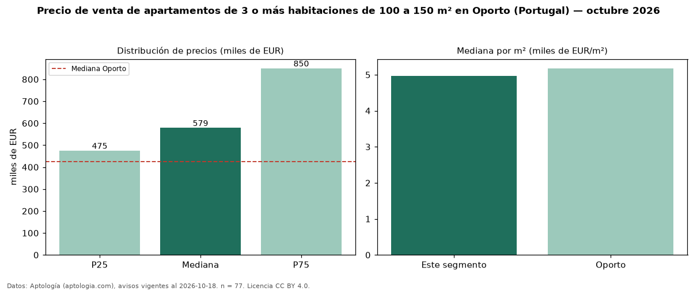

Precio de venta de apartamentos de 3 o más habitaciones de 100 a 150 m² en Oporto (Portugal) — octubre 2026
Con 77 avisos vigentes, el precio mediano de apartamentos de 3 o más habitaciones de 100 a 150 m² en venta en Oporto (Portugal) es EUR 578.592. Frente a la mediana de los apartamentos de 3 o más habitaciones en venta de Oporto (EUR 749.850, n = 194), queda 23 % por debajo; este segmento reúne el 40 % de esos avisos. Por metro cuadrado, la mediana es EUR 4.964/m² (n = 73), 1 % por debajo de los apartamentos de 3 o más habitaciones en venta de Oporto (EUR 5.028/m²). El área mediana anunciada es 121 m². La mitad central de los avisos va de EUR 475.000 a EUR 850.000 (razón 1,8), una dispersión moderada. La mediana de todos los apartamentos en venta de Oporto es EUR 425.000 (+36 % de diferencia). 81 % de los avisos con el dato declara estacionamiento o cochera. Datos: Aptología (aptologia.com), CC BY 4.0 — https://www.aptologia.com/pt/venda/porto. Archivos: PDF, CSV con las cifras y gráfica PNG.

| Avisos únicos | 77 |
|---|---|
| Percentil 25 | COP 475.000 |
| Mediana | COP 578.592 |
| Percentil 75 | COP 850.000 |
| Mediana por m² | COP 4.964 |
Fuente: avisos vigentes de portales inmobiliarios recopilados por Aptología, deduplicados (mínimo 30 avisos únicos por celda). Precios pedidos, no cerrados. Fecha: 2026-10-18.